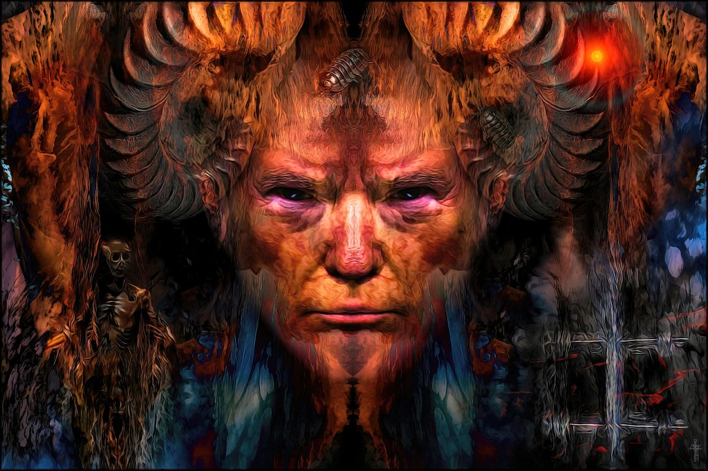

Later into the story Treyton discovers that he has the power of being born as two spirits. This means that although being born human, his body is cursed to share a powerful demon from hell. Early in the show after it is revealed to him from his first transformation, the demon and him clash constantly as two voices in his head, or like two rival siblings rather. This demon feeds on Treyten's rage, and his thirst for revenge, so in traumatic experiences that induce anger and rage Trey transforms into the demon.
